File list
This special page shows all uploaded files.
{kind=link}
{kind=link}
| Date | Name | Thumbnail | Size | User | Description | Versions |
|---|---|---|---|---|---|---|
| 22:24, 29 September 2016 | TunaParty.png (file) |  |
473 bytes | Eraquis | 1 | |
| 10:39, 11 October 2019 | Tur dun03.gif (file) | 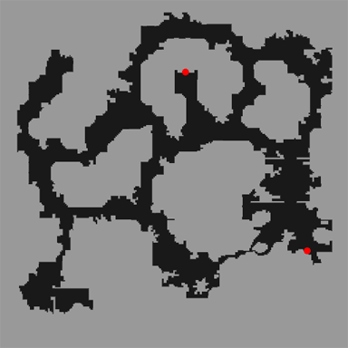 | 19 KB | Alice | 1 | |
| 23:56, 10 May 2019 | Turbo.png (file) | 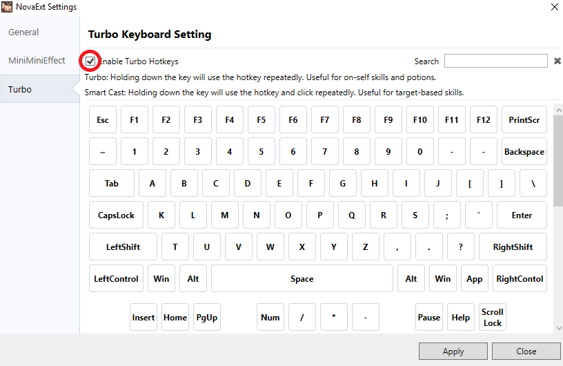 | 33 KB | Colours | 1 | |
| 12:56, 13 December 2022 | Turbo EXT 2.png (file) | 610 KB | Tamugi | 1 | ||
| 00:49, 2 April 2021 | TurtleGeneralPet.png (file) | 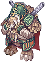 | 4 KB | Randomced859 | 1 | |
| 00:59, 8 February 2020 | Twagner.gif (file) |  |
83 KB | Hatsumei | 1 | |
| 01:27, 10 September 2015 | Twilight Alchemy I.png (file) | 1 KB | AloeLeaflet | 1 | ||
| 01:27, 10 September 2015 | Twilight Alchemy II.png (file) | 1 KB | AloeLeaflet | 1 | ||
| 01:27, 10 September 2015 | Twilight Alchemy III.png (file) | 1 KB | AloeLeaflet | 1 | ||
| 03:10, 17 November 2020 | TwinCaputPet.png (file) | 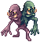 | 1 KB | Randomced859 | 1 | |
| 20:50, 12 November 2015 | Twinbunnies.png (file) | 9 KB | Adri | 1 | ||
| 17:33, 3 November 2015 | Twitter.png (file) | 19 KB | Adri | 1 | ||
| 12:33, 4 September 2016 | Twitter2.png (file) | 2 KB | Mayo | 1 | ||
| 06:26, 19 April 2022 | TwoHandStaffMastery.png (file) | 665 bytes | Miyu | 1 | ||
| 09:46, 13 November 2015 | Tyrannicalcookie.gif (file) | 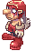 | 13 KB | Adri | 1 | |
| 01:20, 27 October 2018 | Uac 01.png (file) | 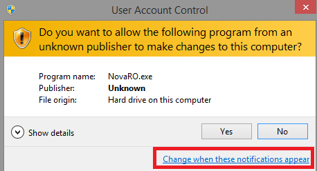 | 15 KB | Tokeiburu | 1 | |
| 15:26, 8 December 2015 | Ukulele.png (file) |  |
7 KB | Halves | 1 | |
| 18:03, 15 July 2018 | Ultra light magic shield.png (file) | 514 bytes | Colours | 1 | ||
| 16:16, 17 October 2020 | Ultron.png (file) | 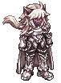 | 3 KB | G00suede | 1 | |
| 18:04, 18 October 2019 | Unholyrevenant.gif (file) | 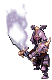 | 33 KB | OXD | Trickster King's Unholy Revenant | 1 |
| 16:08, 2 January 2021 | Unique.png (file) | 1 KB | I Know To Write | 1 | ||
| 18:06, 18 October 2020 | United.png (file) | 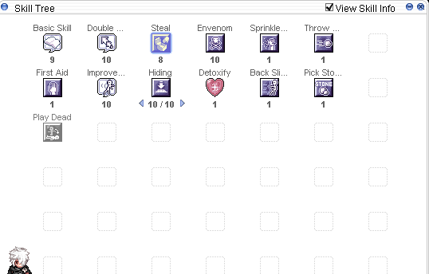 | 11 KB | Kudaliar | 1 | |
| 18:08, 18 October 2020 | United2.png (file) | 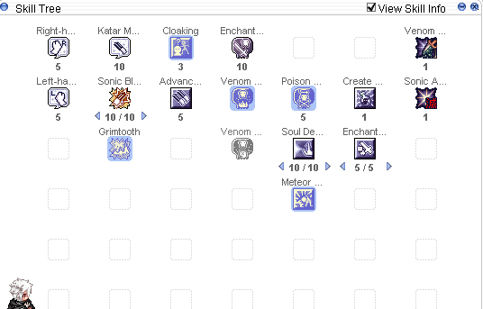 | 16 KB | Kudaliar | 1 | |
| 18:08, 18 October 2020 | United3.png (file) | 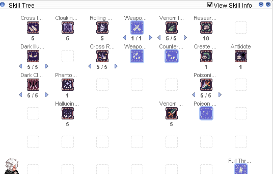 | 16 KB | Kudaliar | 1 | |
| 17:52, 28 December 2020 | Unknown Test 1.png (file) | 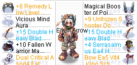 | 21 KB | BlackIntels | Reverted to version as of 17:50, 28 December 2020 (UTC) | 4 |
| 01:02, 4 June 2020 | Unpleasantroyalguard.jpg (file) |  |
37 KB | IllegalKross | for ghost palace instance | 1 |
| 15:35, 6 March 2019 | Ur.png (file) | 20 KB | Alice | 1 | ||
| 05:16, 14 February 2020 | Util bombring.png (file) | 698 bytes | Skorian | 1 | ||
| 05:17, 14 February 2020 | Util dizzy.png (file) | 730 bytes | Skorian | 1 | ||
| 05:17, 14 February 2020 | Util mega.png (file) | 840 bytes | Skorian | 1 | ||
| 05:17, 14 February 2020 | Util resourceful.png (file) | 750 bytes | Skorian | 1 | ||
| 05:17, 14 February 2020 | Util sleep.png (file) | 756 bytes | Skorian | 1 | ||
| 05:05, 8 May 2019 | Utilspr.png (file) |  |
19 KB | Panic | 1 | |
| 06:11, 26 October 2020 | UzhasPet.png (file) | 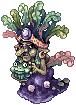 | 4 KB | Randomced859 | 1 | |
| 08:33, 19 June 2016 | VEE1.jpg (file) | 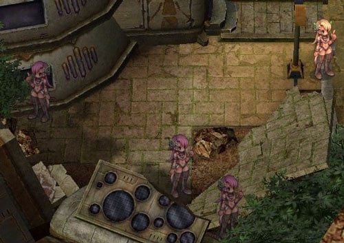 | 52 KB | Mayo | 1 | |
| 16:33, 7 May 2017 | Vagabond.gif (file) | 17 KB | Halves | 1 | ||
| 18:53, 12 November 2015 | Vagabondwolfhat.png (file) | 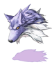 | 9 KB | Adri | 1 | |
| 01:40, 6 May 2016 | Valentinehatbox.png (file) | 2 KB | Renata | 2 | ||
| 18:34, 8 February 2020 | Valentinenpc.png (file) | 129 KB | Hatsumei | 1 | ||
| 18:34, 8 February 2020 | Valentino.gif (file) |  |
2 KB | Hatsumei | 1 | |
| 01:23, 10 September 2015 | Valkyrian Armor.png (file) | 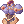 | 738 bytes | AloeLeaflet | 1 | |
| 07:13, 4 April 2017 | Valkyrie Randgris.gif (file) |  |
24 KB | Game | 1 | |
| 17:57, 11 April 2018 | Valkyrie circlet.JPG (file) | 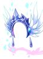 | 9 KB | Pinkpanda82 | 1 | |
| 00:53, 10 September 2015 | Valkyrja's Shield.png (file) | 493 bytes | AloeLeaflet | 1 | ||
| 16:42, 29 August 2017 | ValorBadgePic.png (file) | 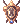 | 506 bytes | Shalltear | Valor Badge. | 1 |
| 23:15, 7 October 2018 | Van1.png (file) | 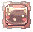 | 18 KB | AloeLeaflet | 1 | |
| 23:42, 7 October 2018 | Van1E.png (file) | 18 KB | AloeLeaflet | 1 | ||
| 23:29, 7 October 2018 | Van2.png (file) | 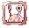 | 18 KB | AloeLeaflet | 1 | |
| 23:42, 7 October 2018 | Van2E.png (file) | 18 KB | AloeLeaflet | 1 | ||
| 06:26, 26 October 2020 | VanberkPet.png (file) | 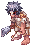 | 2 KB | Randomced859 | 1 |
{kind=link}
{kind=link}
{kind=link}
{kind=link}
{kind=link}
{kind=link}
{kind=link}
{kind=link}
{kind=link}
{kind=link}
{kind=link}
{kind=link}
{kind=link}
{kind=link}
{kind=link}
{kind=link}
{kind=link}
{kind=link}
{kind=link}
{kind=link}
{kind=link}
{kind=link}
{kind=link}
{kind=link}
{kind=link}
{kind=link}
{kind=link}
{kind=link}